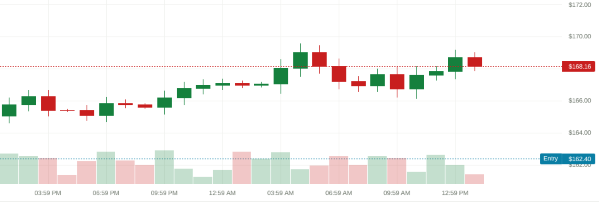

Arclis
Tokenized equities on Solana
Two tokens named AAPL.
AAPLx
Backed 1:1 by shares in custody
Claim on shares
AAPL
Tracks the price. Holds nothing.
No claim
The Arclis Registry tells them apart.
Illustrative example
Markets close.
Stocks split.
Trading halts.
Arclis enforces all three on chain.
Perpetuals · 15 equity and ETF markets

MARKET CLOSED · new risk refused, exits allowed
AI agents, paid in stocks, hedged.
ClawPump
Token launch quoted in a stock
→
Treasury
Holds the stock fees
→
Short perp
Keeps the dollar value
15
markets
28
on-chain instructions
600+
automated tests
Arclis
arclis.timioni1490.workers.dev | arclistrade.world